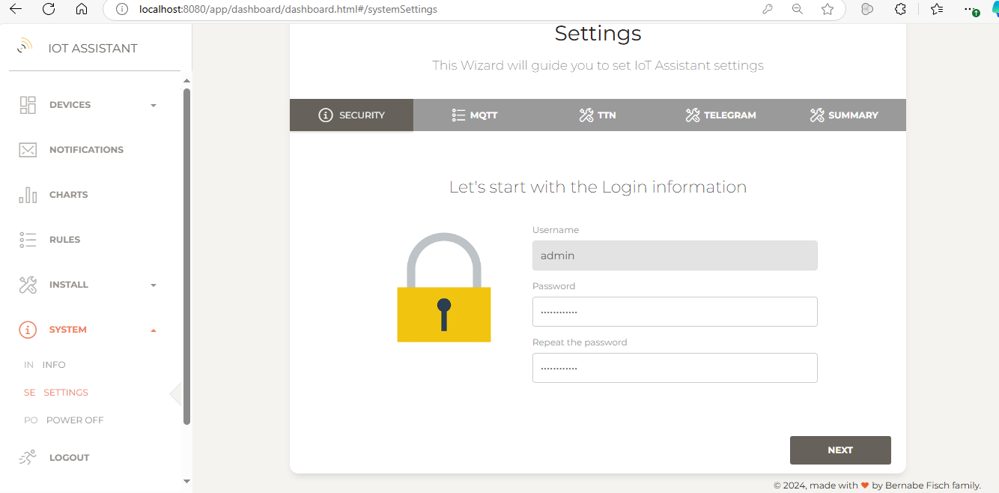
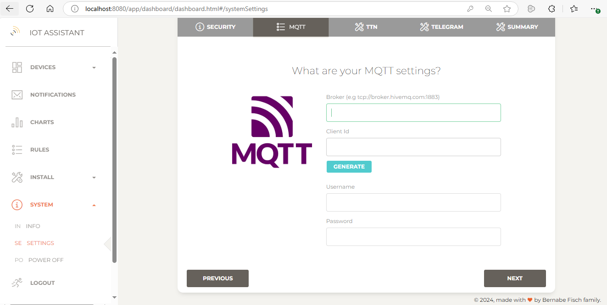
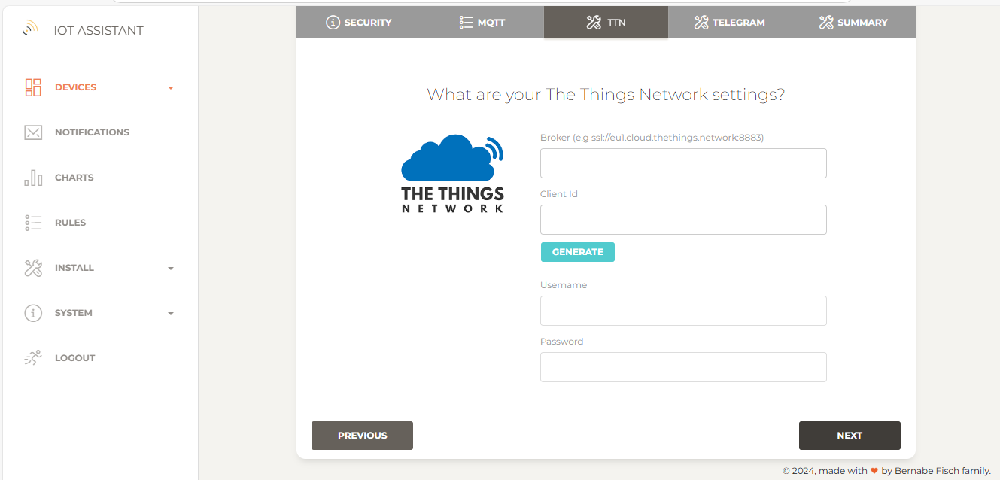
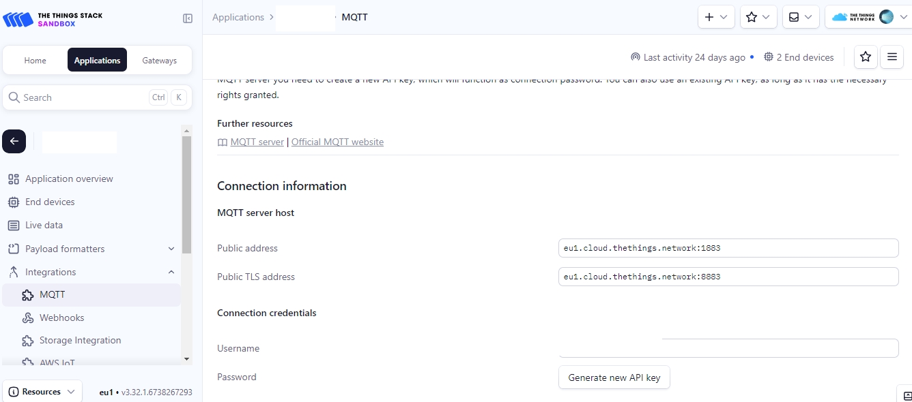
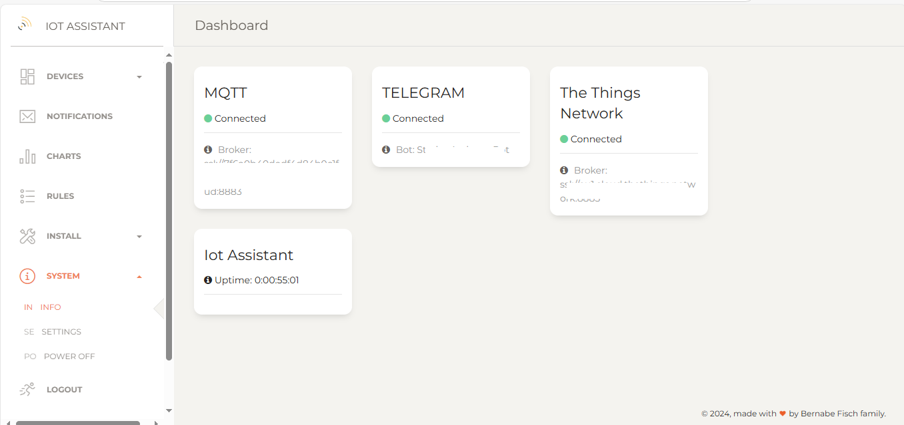

Configuring IoT Assistant
In order to receive Telegram notifications and connect to your devices, you first need to configure your IoT Assistant instance. Click on System > Settings to open the settings wizard.
If you are not going to use certain integration (e.g The Things Network or you dont want to receive notifications) you can leave the related form blank and click Next
1 - Enter the current password and optionally change it. Then click next
{kind=link}
2 - Enter the MQTT settings to connect with your MQTT devices. You can use a locally deployed broker (e.g with Mosquito) or a public one like HiveMQ Cloud. The broker URL will typically look like tcp://somedomain:port or ssl://somedomain:port
If authentication is required, provide the username and password otherwise keep this fields blank. Also, provide a unique client ID (you can optionally generate a random one).
 3 - Enter The Thing Network settings to connect with your The Thing Network devices. Also, provide a unique client ID (you can optionally generate a random one). Get the broker, username and password from The Things Network console.  {kind=link}
{kind=link}
{kind=link}
4 - Enter your Telegram bot settings to receive Telegram notifications. If you are not sure how to fill this fields follow this guide
{kind=link}
5 - Finally we click Finish to proceed. If everything is set up correctly, you will be redirected to the system information page, where the connection status will be displayed.
{kind=link}